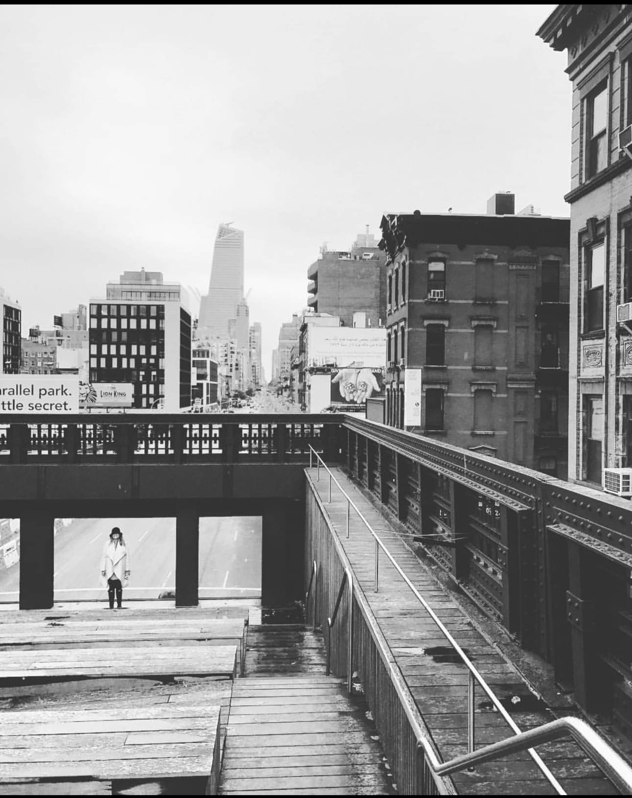

“Love talked about is easy to ignore. Love in action is irresistible.”
— Robbye Jo Quinter
I believe that accessible, well-organized information has the power to make a lasting impact. I enjoy working to preserve cultural and historical records with care, clarity, and respect, helping to keep them meaningful for the future. With a thoughtful approach grounded in precision, creativity, and kindness, I see each project as a chance to support others by making knowledge easier to find and appreciate.

Photo credit: Eric Allen Smith, October 22, 2016 — High Line, New York City.